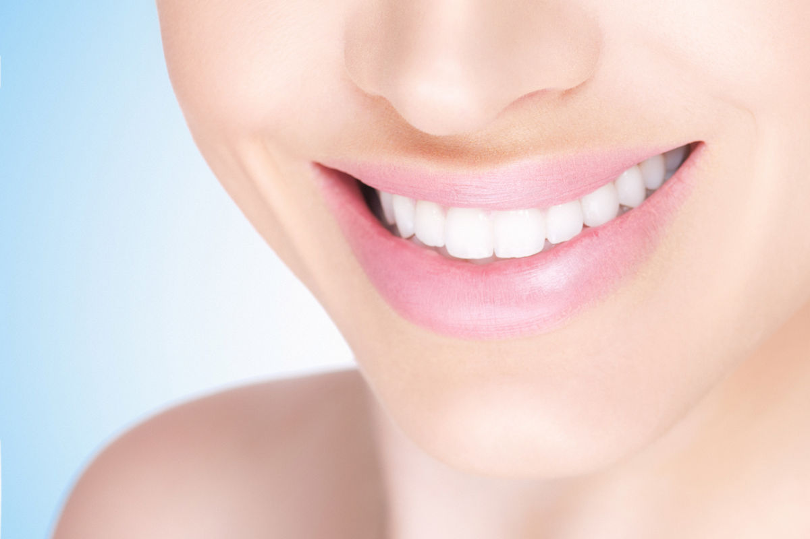
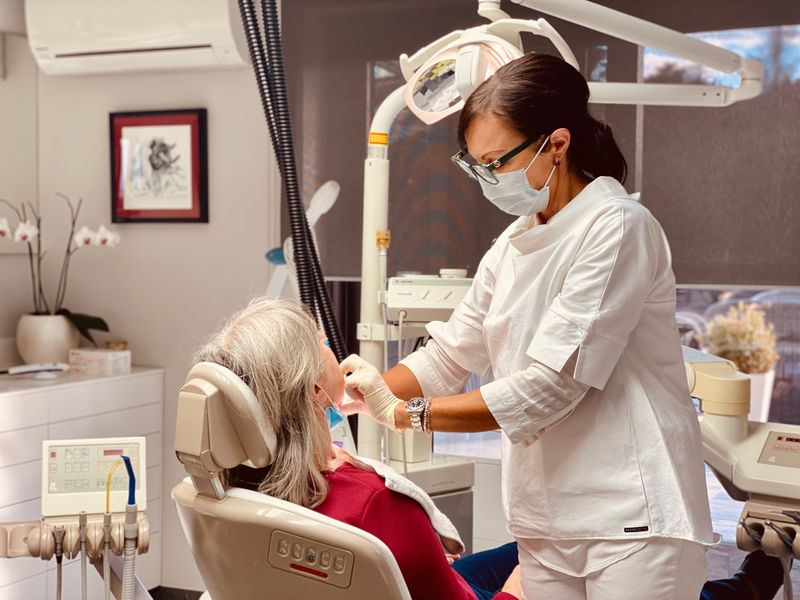
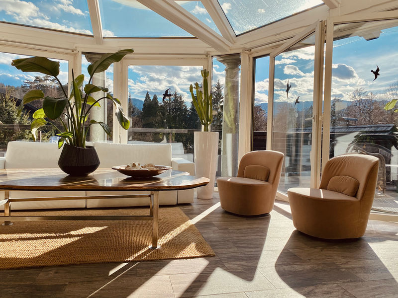
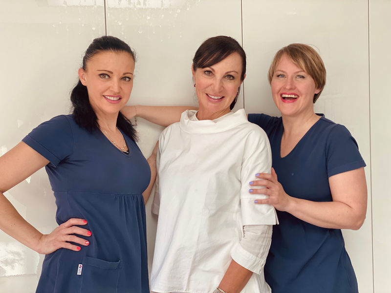
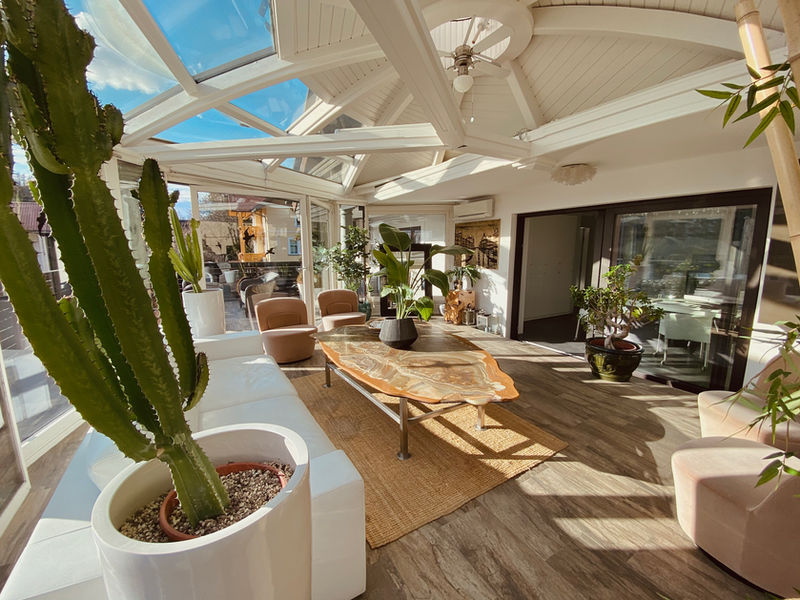
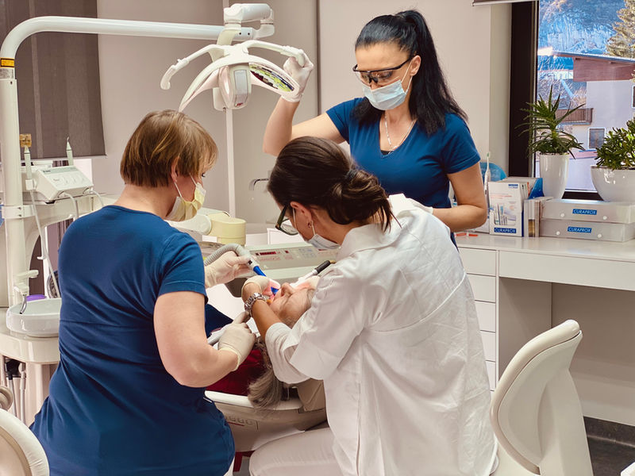
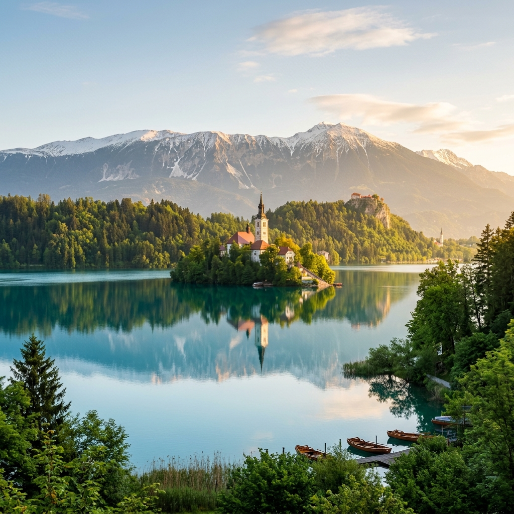

Estetica e salute nel cuore di Bled. La dr.ssa Nina Čelesnik e il suo team si dedicano a rendere i vostri denti non solo sani, ma autenticamente belli — il vostro sorriso è arte.

Il nostro studio vanta la più antica tradizione dentistica privata in Slovenia. Fondato dal dr. Emil Čelesnik, che ha introdotto per primo nel paese le techniques avanzate in ceramica estetica e ha posto le basi per l'odontoiatria estetica moderna. Il dr. Emil non cercava solo la funzionalità: cercava l'estetica perfetta, denti che non fossero solo sani, ma autenticamente belli. I suoi leggendari capolavori – come la straordinaria ricostruzione di un cranio umano per il Congresso di Belgrado nel 1986 e i celebri denti in porcellana con serpente d'oro presentati a Norimberga nel 1989 – hanno sbalordito la comunità professionale internazionale per l'incredibile fedeltà nell'imitare i denti naturali e la superba precisione.
Oggi questa ricca eredità viene portata avanti con lo stesso amore, precisione e senso estetico da sua figlia, la dr.ssa Nina Čelesnik. Il suo studio si dedica all'estetica tanto quanto all'eccellenza dentale, affinché il vostro sorriso non sia solo sano, ma veramente incantevole. Lo studio si trova nel cuore di Bled, a pochi passi dal lago e da tutta l'offerta turistica.
Scoprite il nostro approccioAbbiamo strutturato due livelli distinti di servizi per garantire sicurezza, tempestività e convenienza ad ogni paziente.
Cure specialistiche d'eccellenza per ricostruzioni estetiche e protesiche complesse.
Lavori di altissima precisione in porcellana, rifiniti a mano per un sorriso perfetto ed estremamente naturale.
Ponti e corone metal-free ad altissima biocompatibilità, realizzati su misura per la vostra armonia facciale.
Sostituzioni permanenti e sicure dei denti mancanti con tecniche mininvasive e materiali d'eccellenza.
Cure dentistiche rapide, di alta qualità ed estremamente convenienti per tutta la famiglia.
Otturazioni estetiche bianche realizzate con i più moderni materiali compositi a prezzi convenienti.
Pulizia professionale del tartaro, sabbiatura e lucidatura preventiva per mantenere gengive sane.
Trattamenti canalari di precisione per salvare denti compromessi con strumenti meccanici moderni.
Scoprite le nostre moderne sale a Bled e i risultati straordinari dei restauri dentali estetici.




Trascinate il cursore dorato a destra e a sinistra per confrontare direttamente lo stato dei denti prima e dopo l'applicazione delle nostre faccette in porcellana premium.

Il nostro studio si trova nel cuore pulsante di Bled, a pochi minuti a piedi dall'iconico lago con la sua isola, dal castello medievale e dalle porte del Parco Nazionale del Triglav. Molti dei nostri pazienti provenienti dall'Italia, dall'Austria e da tutta Europa scelgono di unire le cure dentistiche con un rilassante fine settimana o una vacanza in una delle destinazioni alpine più affascinanti del mondo.
Specialisti di eccellenza e personale cordiale che si prendono cura del vostro comfort e della vostra salute con amore e attrezzature all'avanguardia.
Figlia del fondatore dr. Emil Čelesnik. Con oltre 20 anni di esperienza, è considerata una delle massime esperte in Smile Makeover, ricostruzioni estetiche complesse e protesi speciali nella regione. Collabora regolarmente con cliniche europee e specialisti in implantologia.
Specialista in endodonzia (cure canalari). Con un'estrema precisione sotto il microscopio odontoiatrico, salva denti che altrimenti sarebbero destinati all'estrazione.
Odontoiatra con oltre 25 anni di esperienza in chirurgia orale e implantologia. Specialista in innesti ossei complessi, grande rialzo del seno mascellare (sinus lift) e impianti a carico immediato.
Odontoiatra focalizzato sull'odontoiatria estetica e su cure generali mininvasive. Giovane, estremamente meticoloso e molto apprezzato dai pazienti che soffrono di ansia da poltrona.
Assistente professionale e dedicata con pluriennale esperienza nell'assistenza durante interventi protesici ed estetici complessi. Cura in modo impeccabile la sterilizzazione, l'igiene e il massimo comfort del paziente.
Assistente affidabile ed esperta, che accompagna i pazienti durante l'intero percorso di cura con alta professionalità e gentilezza. Si occupa della preparazione delle sale cliniche e del supporto amministrativo.
Recensioni autentiche estratte dal nostro profilo Google Maps. Siamo fieri della fiducia riposta in noi da intere generazioni.
Compilate il modulo. Verificheremo immediatamente la disponibilità nel nostro calendario cartaceo fisico per evitare sovrapposizioni e vi contatteremo.
Per prenotazioni immediate o urgenze odontoiatriche potete contattarci telefonicamente:
+386 (0)4 575 08 01